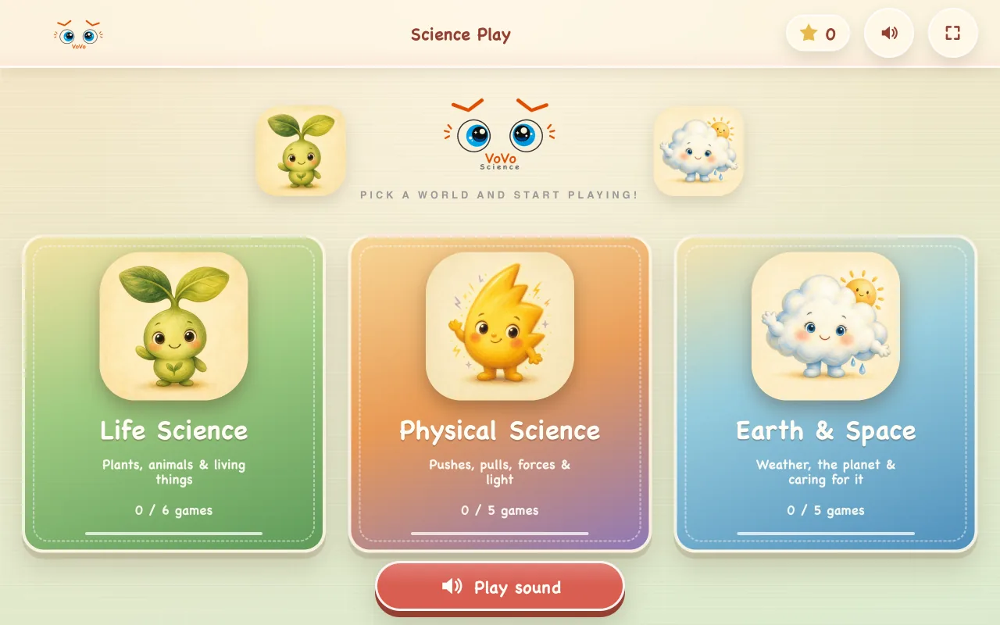
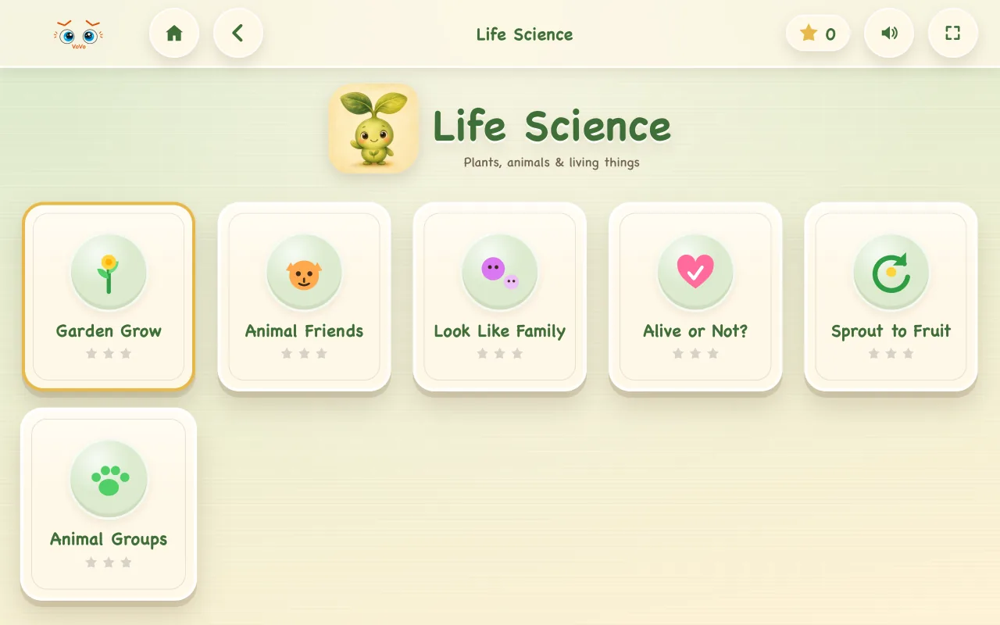
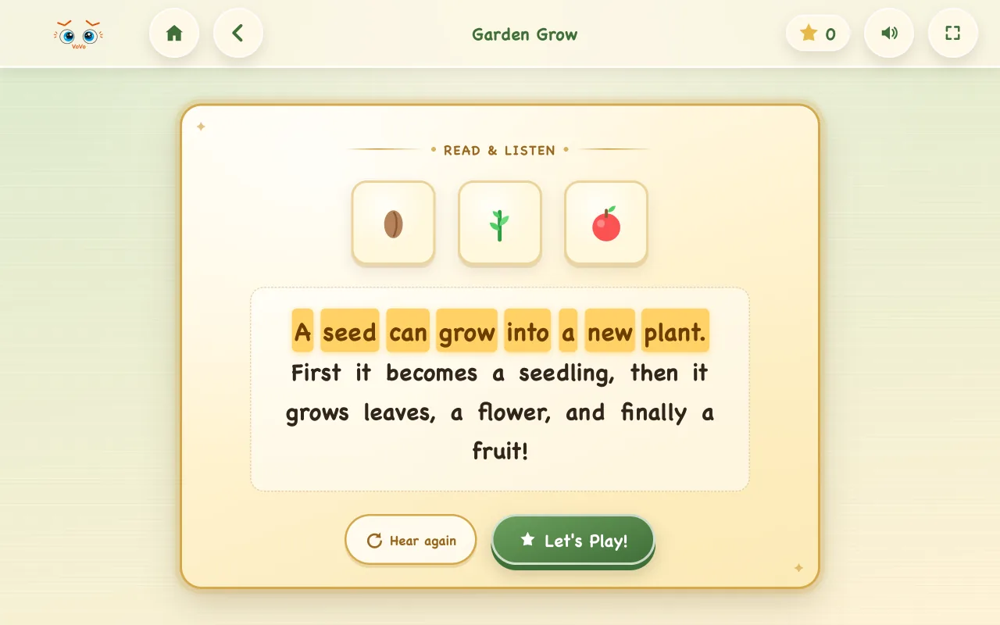

VoVo Science
A playful science world for young children. Short, visual games about plants, animals, weather, forces, and more.

(open full size)Screenshots


(open full size)

(open full size)What it is
Children pick a world, like Life Science, Physical Science, or Earth and Space, and play short games inside it. The games are friendly to early readers, and narration reads instructions aloud.
The Pre-K level has 15 games in three worlds. The Grade 1 level covers 6 big ideas in 36 units. Grades 2 to 5 are planned.
Play without the internet
VoVo Science is plain HTML, CSS, and JavaScript, with no install, no build step, and no server. Download the code, extract it, and open index.html in your browser. It runs straight from your disk.
How it began
My wife teaches science to our five-year-old daughter, VoVo. After Meadow Math, she wanted a website where kids could learn science too. She built VoVo Science with AI tools; I helped put it on GitHub, put it on the web, and advised on some product and technical choices.
Privacy
VoVo Science needs no account and collects no personal information. If progress or preferences are saved, they stay in your browser's local storage.
The website uses Cloudflare Web Analytics to count visits in an anonymous, aggregated form. Read the full privacy and terms.